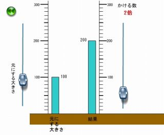

小学校算数「小数倍」の補助教材
小学校算数、小数倍シミュレーション
new
小数倍がイメージをしっかり持つことは大切です。

※1印の付いている作品群が、
財団法人学習ソフトウェア情報研究センター
の2006年度学習ソフトウエアコンテストの「学情研賞」を頂いたものです。
※2印の付いている作品群が、2007年わかやまソフコン「優秀賞・審査員特別賞」を頂いたものです。
※3印の付いている作品群が、2007年度学習ソフトウエアコンテスト出品（「奨励賞」）に付属させていたものです。